SERA:
Simulation Environment for Radiotherapy
Applications
User's Manual
Version 1C0

SERA:
Simulation Environment for Radiotherapy
Applications
User's Manual
Version 1C0

7. Transport Modeling
The seraMC interface for transport modeling, seraCalc, provides an interactive input interface for the seraMC radiation transport module. This interface allows the user to manipulate the various input parameters and edit directives for seraMC, to create an input file for a specific calculation. Existing input files may be read in and modified, or the input may be created from an essentially blank template. A sample configuration for the seraCalc interface is shown in Figure 7.1. The following sections provide a brief explanation of the various input fields in the interface, with links to more detailed descriptions of the input parameters in the seraMC documentation.
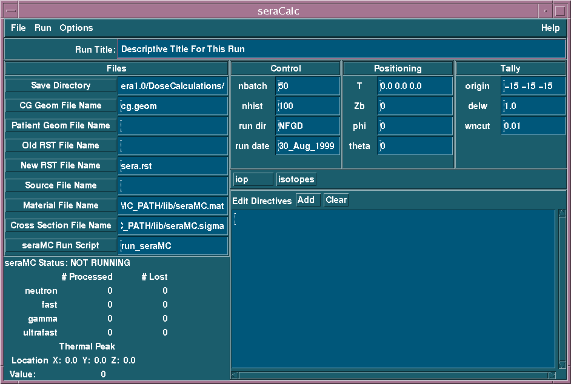
Figure 7.1. Sample seraCalc interface display. This is
the default configuration at startup.
To start the creation of a seraMC input file, the user should select the name of the input file. By default, a set of standard values is displayed in the interface window, as in Figure 7.1, with Save Directory assigned the directory from which seraCalc was invoked. Selecting Open from the File menu, as shown in Figure 7.2, allows the user to start with values from a previous session. The Save and Save As menu buttons allow the modified input data to be saved either to the loaded file, or to a new file as chosen in a file selection widget.
The Launch button allows other sera modules to be executed from within seraCalc. The Check Version entry submits an Internet job to verify that the version presently used is the most current. A database is checked, and the two code versions are displayed in a popup.
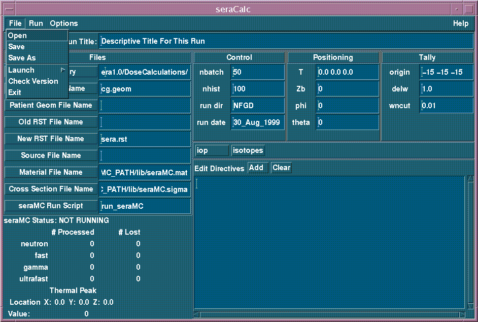
Figure 7.2. File pulldown menu.
The Run menu in the top left corner of the seraCalc window has three selections, as shown in Figure 7.3. The Run button is used to initiate a run of the seraMC program using the newly generated input file. This invokes the script file given in the seraMC Run Script field (see Section 7.4.9), with the input file specified by either the Save or Save As options in the File menu (see Section 7.2.1). The Test button is used to run a short trial of the seraMC program. This causes a short seraMC run to be made for checkout. For this run, particle tracks are written to a file named input.pp, where input is the name of the input file used for the run. These tracks can be viewed in sera3d along with the three-dimensional model for further model verification. The Kill button is used to stop the currently running seraMC program.
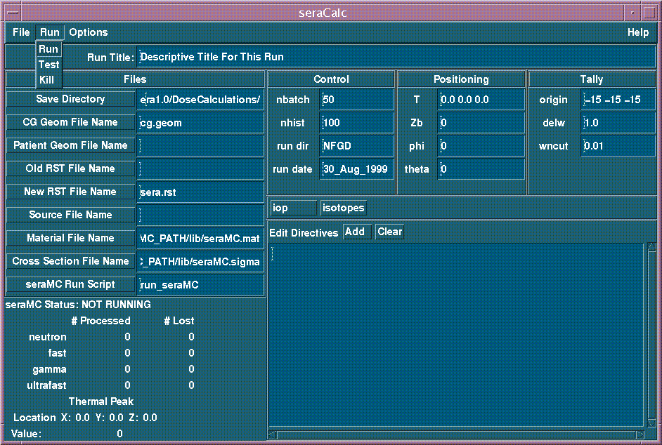
Figure 7.3. Run pulldown menu.
The Options menu has only one selection, as shown in Figure 7.4. This option toggles the automatic display of the three axial views of the source-patient configuration generated by seraMC. These views are saved in the three raster files view.1, view.2, and view.3.
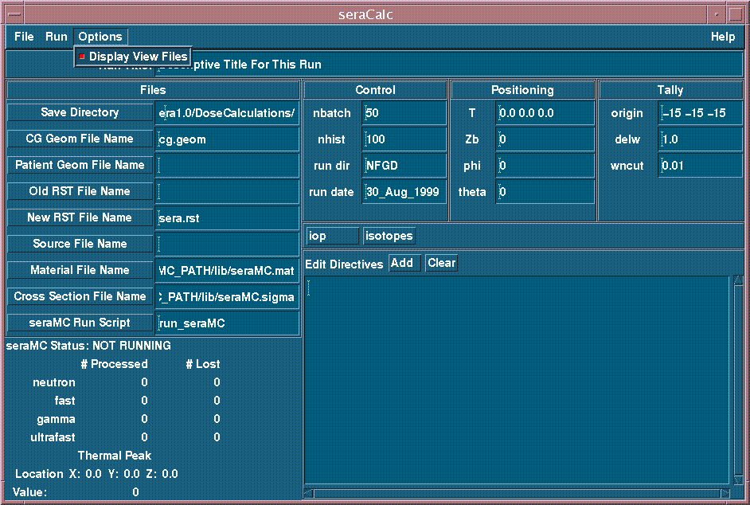
Figure 7.4. Options pulldown menu.
The title for the seraMC run is entered in the field at the top of the panel labeled Run Title: (see Figure 7.5). This identifies the particular data set. As for other data entry fields, the user can edit this field by positioning the text cursor anywhere in the input area and entering new characters. Also, the entire line can be highlighted and deleted or replaced.

Figure 7.5. Run Title
All of the fields on the panel work in a fashion similar to Run Title, with the exception of the fields in the subpanel labeled Files in Figure 7.6. This corresponds to the upper left quadrant of the seraMC interface.
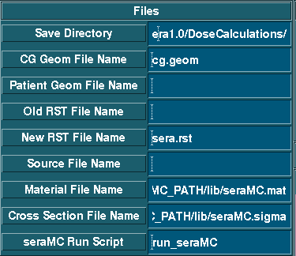
Figure 7.6. Files Panel
Each of these selections consists of a push button with a label and a text entry field to the right of the button. Entering a value can be performed using one of two methods. The first method consists of the user selecting the text entry field by moving the cursor to the area and clicking the left mouse button. The value for the field is entered using the keyboard. In this instance, environmental variables (e.g., $SERAMC), relative paths (e.g., ../filename), and home directory shortcuts (e.g., ~user_id) may be employed, as these are expanded in the seraMC code. The second method consists of pressing the button with the label. A file selection popup appears and the user can select the name of an existing file. When the OK button of the file selection popup is pressed, the name chosen is entered into the text entry field.
The Save Directory field specifies the name of the working directory to be used for the seraMC calculation. It is to this directory that all the files created by the seraMC calculation will be written. A copy of the input file, with the same name chosen for the Save and/or Save As buttons, will also be written to this directory.
This file defines the combinatorial geometry (CG) space for the problem. For cases where a patient geometry (image space) is specified, the CG space is used for the source region and the world outside the image space. The source geometry is defined in the source file (see Section 7.4.6.) However, it is permitted to have cases where only a CG space is specified. This is generally done for phantom irradiations, or where the geometry may be simply defined in terms of intersections and/or unions of solid geometric shapes. A CG file is always required.
The patient geometry file is used to define the geometry of the patient in image space. This will be a univel file constructed by seraModel from the MRI, CT, or PET images. For cases where the entire geometry is described by the CG file, a patient geometry file is not required.
The old restart file provides a restart capability for seraMC. Specification of a file name here causes seraMC to read in the dose information from this file, and continue the calculation from this starting point. Note, however, that this restart ability only allows the user to run additional run directives, not to run additional particles for a previously calculation. For example, if a seraMC case was run for 1,000,000 neutron histories, and this was deemed insufficient for convergence, the restart capability will not allow the user to run an additional 1,000,000 histories for a total of 2,000,000. It will allow the user to run only the neutron histories, then later run the biased fast neutron and gamma components, or to run the neutron and gamma components, and edit later. For calculations that do not utilize the restart capability, the old restart file should be specified as none. For further details, please see the run_dir section below and in the seraMC manual.
The new restart file is the restart file to be created by the present seraMC calculation. One restart file is created for each run directive specified, except the edit directive. The first file is named filename, the second is filenamea, the third is filenameb, and so on. Since each of these later versions contains the information from the previous file, the older files are deleted as the newer ones are created. Edit only calculations should specify none for the new restart file. For additional information on the contents of the restart files, see the seraMC manual.
The source file provides the coupled energy-angle description of the neutron and gamma source from a particular facility, as well as the CG description of the source and collimator geometry. A complete description of the source file contents and formats is available in the seraMC manual.
The material file provides nuclide density composition specifications for a variety of materials useful for BNCT and other forms of clinical radiation therapy. Cross sections to access from the seraMC cross section file are given for each nuclide.
7.4.8. Cross Section File Name
The cross section file contains the neutron and gamma cross section data for the set of nuclides required by the material file. Neutron and gamma production data are available at energies up to 16.9 Mev, and gamma interaction data are available to 100 MeV. Details on this file are available in the seraMC manual, with a list of available nuclides given in the edit isotopes section.
The seraMC run script is a simple Unix shell script which invokes the seraMC transport module and performs some file management activities. The supplied default script file is usually sufficient for most users' purposes.
There are three "hidden" file inputs not shown above. These files concern the high-energy neutron calculations available for analysis of fast neutron therapy facilities. These text fields only become visible when the U and/or P run directives are entered (see Section 7.5.3.) The three files specify the proton range data file, the ultrafast directory file, and the ultrafast cross section file.
The proton range data file gives tabulated range-energy data for protons in a variety of materials. This is used to compute the proton recoil dose from scattering of high-energy (>16.9 MeV) neutrons on hydrogen. A general description of the proton dose computation is provided.
The ultrafast
directory file provides information that seraMC
requires to read the ultrafast cross section
file. The cross section file contains
a limited subset of the materials in the seraMC
cross section file, for energies between 16 and 100 MeV. Further
details are provided in the seraMC manual.
The control panel specifies the number of particle histories to simulate and the run mode(s). It is shown below in Figure 7.7. This panel has four fields, which are text entry fields. The user chooses a field for which a change is to take place and enters new values in the field.
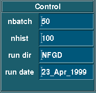
Figure 7.7. Control Panel
The nbatch input parameter specifies the number of statistically independent batches of neutron histories to run in seraMC.
The nhist input parameter specifies the number of neutron histories to run in each batch. There is presently a limit of 2000 histories per batch.
The run directives determine which particular calculational modes are to be invoked in seraMC. The valid directives are N, F, G, D, T, U, and P. The valid combinations of these directives are NFGD, NFD, NGD, FGD, UPGD, UPD, UGD, PGD, and GD.
The run date allows the user to specify
a date for identification purposes. This date is not used in any
computation, merely to allow the user to retain information regarding the
construction of the treatment plan, or to identify the treatment date.
The date is limited to 15 characters, and it must be provided in the form
of a character string, with no embedded blanks or other white spaces.
The default is the date of the invocation of seraCalc, given in the form
DD_MMM_YYYY,
where the month designation is the abbreviation using three alphabetic
letters.
7.6 Positioning Panel
The positioning panel specifies the beam orientation for this case. It is shown below in Figure 7.8. This panel has four fields which are text entry fields. Any changes may be entered as described above. These four fields provide a complete description of the beam orientation for a particular irradiation setup.
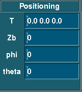
Figure 7.8. Positioning Panel
The target point location T is given in terms of the model coordinate system, which is the coordinate system used in seraMC. This provides the (x,y,z) coordinates of the point where the center of the source beam is aimed.
7.6.2. Distance to Target Point
The distance to the target point Zb is the straight-line distance from the source plane to the target point. This parameter should be set sufficiently large to prevent overlap between the patient and the source/collimator assembly. This distance is given in cm.
The polar angle phi is the angle in degrees between the superior axis and the desired beam location. Positive values are associated with rotation towards the right side of the patient.
The azimuthal angle theta is the angle
in degrees between the right axis and the desired beam location.
Positive angles are associated with rotation towards the front of the patient.
The tally panel of the rtt popup specifies the overlying 3D edit mesh. It is shown below in Figure 7.9. This panel has three fields, which are text entry fields. Any changes may be entered as previously described.
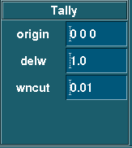
Figure 7.9. Tally Panel
7.7.1. Origin
The origin parameter specifies the (x,y,z) coordinate location of the center of the edit mesh system. This superimposes a 30x30x30 cubic mesh over the 3D image system, centered on the designated origin point. This edit mesh is used for all dose and flux tallies in the seraMC calculation.
7.7.2. Delw
The delw parameter specifies the size, in cm, of each mesh element in the 3D edit mesh. All mesh elements are regular cubes, so only one dimension need be provided.
7.7.3. Wncut
The wncut parameter
designates the minimum weight allowed for neutrons in the particle history
simulation. When a particle weight falls below this value, a binary
decision is made. The particle weight may be doubled and tracking continued,
or the particle history may be terminated. The initial particle weight
is specified in the source routines.
There are two buttons below the three panels just described (see Figure 7.10). These activate popups for special operations affecting the transport run. Pressing a button will cause its popup to appear. Each of the popups has text entry fields with default data (Figures 7.11 and 7.12). The user can change these data and then press the Save button on the popup to put it away. The Reset button on the popups causes the default values to be reinstated for that popup. The names on these buttons are iop and isotopes.
Figure 7.10. Auxiliary Panel
Section 7.8.1. Beam Optimization and Automatic Positioning
The beam optimization and automatic positioning popup is displayed by pressing the iop button, as shown in Figure 7.11.
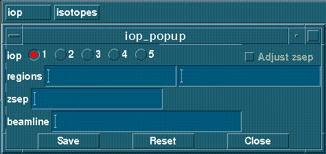
Figure 7.11. Beam optimization and positioning input panel.
There are five options for the beam positioning search, selected by the four buttons at the top of the popup. The default positioning is iop=1, which uses the values for T, Zb, phi, and theta to position the beam.
For iop=2, all the parameters in the popup (regions, zsep, and beamline) must be specified. Regions designates the regions encountered between the patient and the source plane. Zsep gives the minimum distance that must be maintained between the skin surface and the source aperture. Beamline is a point that the beam centerline is forced to intersect between the center of the source plane and the target point. These values will allow seraMC to determine the beam positioning by calculating new values for Zb, phi, and theta.
For iop=3, only the regions and zsep parameters need be provided. The positioning search determines phi and theta such that the distance from the skin surface to the target point is a minimum.
For iop=4, the input is similar to that for iop=3. The search fixes the beam angles at the specified values, and sets the separation distance, zsep, between the skin surface and the source aperture.
For iop=5, the input is similar to that for iop=3. The positioning search uses the theta angle as specified in the input and finds phi such that the distance from the skin surface to the target point is a minimum.
The Adjust zsep button activates an option to adjust the distance zsep so that it is a minimum but causes no geometric interferences between the collimator structures and the patient.
The edit isotopes popup is displayed by pressing the isotopes button, as shown in Figure 7.12.
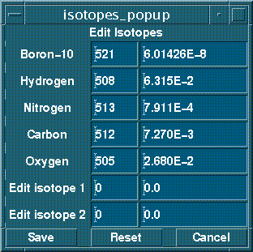
Figure 7.12. Isotope density input panel.
The edit isotopes popup allows the user to specify the composition of a particular material, which will be used for the dose edits. Generally, this is brain tissue, as shown in the default values, but any material for which a dose calculation is required may be used. The compositions are specified in atoms/barn-cm, and the list of edit isotopes is provided in the seraMC manual. Any isotopes may be requested, with the caution that the edits will always be titled as in the popup, i.e., boron dose, etc. It thus falls to the user to account for any deviations from human tissue in the edit isotopes specifications.
In addition, two edit isotopes may also be
specified, which will be used to calculate reaction rate edits for arbitrary
nuclides. Any nuclide provided in the seraMC
material file may be used for these edits, and infinite-dilute reaction
rates may be computed by supplying a very small density (usually 1.0E-24).
For further details on available nuclides, please consult the seraMC
manual.
Note: The seraMC edit capability has been transferred to the seraPlan module, and will eventually be deleted from seraMC and seraCalc. This section is provided for compatibility with input files for previous versions of seraCalc/seraMC.
Edit directives for the input file are entered in the large text widget shown in Figure 7.13, which corresponds to the lower right corner of the rtt popup. An edit directive is chosen from the directives popup that appears when the Edit Directives Add button is pressed. The edit directives are interpreted after the transport runs are completed when a D mode run is specified.
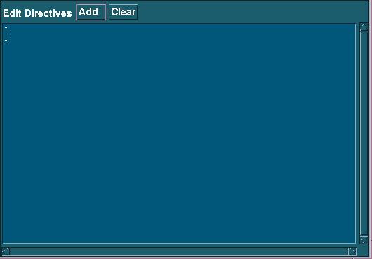
Figure 7.13. Edit directives display.
These edit directives may be passive (setting variables, etc.) or active (specifying that a particular type of edit be performed). When an active edit directive is encountered during the seraMC run, the code performs the edit. After the active edit directive line, the user may change the variables and perform as many additional edits as desired. When the user selects the edit from the box shown in Figure 7.14, a line is added to the edit window showing the number and type of input words required as well as some defaults. In general, the user will change these values to those required for this problem. When a protocol is established, many of the edit directives are very similar, and those loaded from a previous case may need only slight modification for the current case. All entries are cleared when the Edit Directives Clear button is pressed.

Figure 7.14. Edit directives creation widget.
The user can press as many of these directive
buttons as desired before pressing the Close
button to put the popup away. As each button is pressed, the appropriate
edit directive template is entered into the text widget. The user
can then use standard editing techniques to enter the desired values for
the specific directive.
The panel at the lower left is used to display running statistics for the seraMC run (see Figure 7.15). As the seraMC program and this program exchange data, the appropriate values are displayed in this panel. This is accomplished via a file called sera.mon, which is written into the seraMC working directory. The file is updated after each batch of particles, and the peak location and value are written at the end of the run.
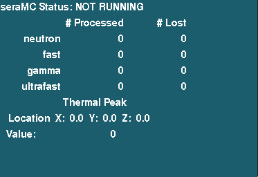
Figure 7.15. Monitor Panel